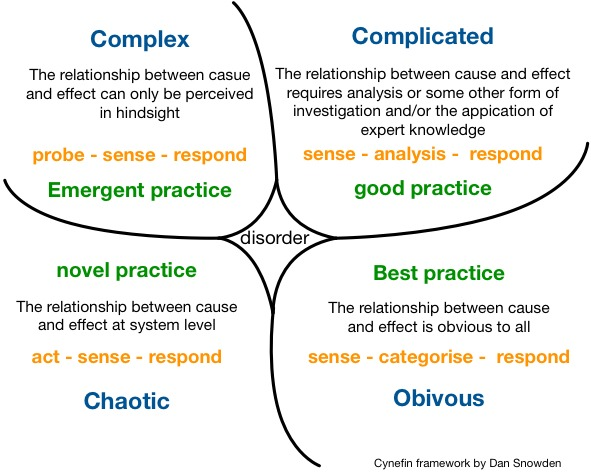

工作坊介绍
设计师们和决策者们正面临着越来越多前所未有的多变性和复杂性。在这种背景下，能够帮助我们理解复杂性，并展开行动的实用工具和方法变得越来越重要。
本次【云时代 | 领域驱动设计峰会】我们非常荣幸的邀请到了国际大师、Cynefin框架的创建者Dave Snowden教授，将带领大家在多变性和复杂性的背景下实现：战略规划，复杂性管理，可以自适应的复杂系统设计，以及在不确定性下开展管理工作。

Cynefin框架已在世界各地不同场景广泛使用，大至国际知名时装公司的董事会，小至普通软件开发团队，更甚至是城市街道上的特警队。决策者们已将其应用至各个行业、各个组织层级中。
除了基本框架之外，Dave一直在积极拓展Cynefin框架 - 你知道Cynefin框架已经有了子域（subdomain）模型吗？另外，你知道域和域之间也存在着可以叙述的边界的定义吗？
最近的进展包括了考虑通过约束条件来定义域，通过理解能量、认知以及资源的流入和组织来移动域，还有如何操纵“梯度”来管理这些资源的流入。
讲师简介
Dave Snowden
Cognitive Edge管理咨询公司的创始人兼首席科学官。
Dave Snowden教授的工作本身具有国际性，并且涉及政府以及那些因复杂问题影响战略、组织决策和常规决策的行业。他开创了一种以人类学、神经系统科学为基础的组织设计科学和复杂适应系统理论。在一系列主题方面，他都是一个非常受欢迎且充满热情的主题演讲者，也因他务实的愤世嫉俗和反传统的风格被众人周知。
他在比勒陀利亚大学和香港理工大学担任访问主席，同时也是英国华威大学的访问学者。
他是南洋大学国防与战略研究所以及新加坡公务员学院的资深研究员。他在Boone on
Leadership上发表的论文曾被刊登成为2007年11月版本的“哈佛商业评论”封面文章，并在同年获得了管理学院最佳从业者论文奖。
他之前在知识管理方面工作中的独创性获得了学院的特别奖。他在知识管理领域的几个学术、从业者期刊出版社里担任编辑委员会成员，同时也是E:CO的主编。 2006年，他在物理科学研究委员会（英国）刚刚成立的时候担任研究规划负责人，并于2007年被任命到国家科学基金会（美国）复杂科学研究评审小组。
他曾供职于IBM，担任知识管理机构的负责人，并为复杂的组织创立了Cynefin中心。
在此期间，他在IBM的全球广告活动中被选为六位“无所不知”的思想家之一。